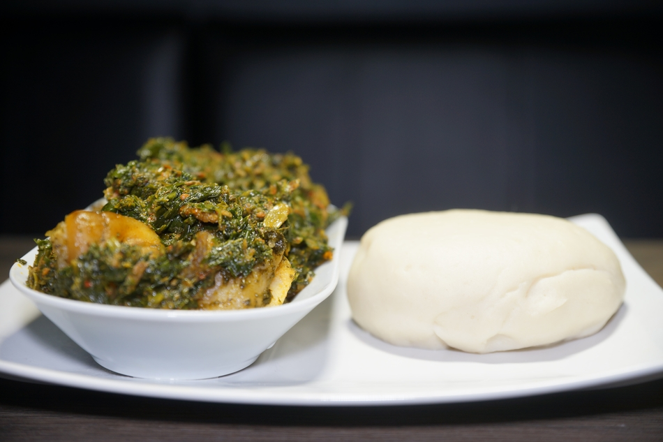

Efo Riro

Local Nigerian Soup
Efo riro is a vegetable soup that originated from the western part of Nigeria.
The soup is typical to the Yoruba culture.
Ingredients
- vegetables
- Assorted Meat
- Palm Oil
- Spices
- red bell Pepper
- Locust beans
- Cray fish
Steps
- Shred the vegetables
- Add a little palm oil to the pot, fry the meat alongside the spices and all other Ingredients
- Leave the stock to seamer for about 15 mins
- Lastly, add the shrreded vegetables. It should cook for another 10 mins
- Serve hot with or without Amala